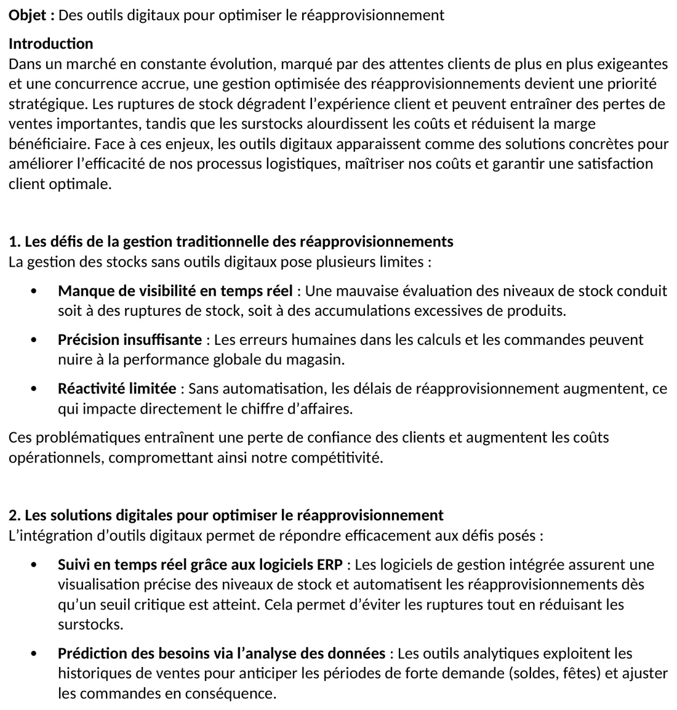

Étude de cas · BUT 2 · Semestre 3
Diagnostic et merchandising d’Intersport Montbéliard
Un entretien avec le directeur, un diagnostic stratégique, un audit du magasin sur plan et des propositions pour faire vivre la surface de vente.
- Période
- Octobre à décembre 2024
- Format
- En trinôme
- Domaines
- Marketing et international, Omnicanal et digital, Achats et relation client

Contexte
Intersport Montbéliard est installé depuis trente ans dans la zone commerciale du Pied des Gouttes : 2 314 m² de vente, 34 univers et 300 à 400 visiteurs par jour, face à Décathlon, Sport 2000 et Leclerc Sport.
Objectif
Diagnostiquer la position du magasin et proposer de quoi faire vivre sa surface de vente.
Mon rôle
Travail en trinôme, de l’entretien avec le directeur à la note de synthèse.
Démarche
- SWOT
- PESTEL
- Cinq forces de Porter
- Merchandising
- Entretien avec le directeur du magasin
- SWOT, PESTEL et cinq forces de Porter notées sur 10
- Six facteurs clés de succès
- Audit avec la check-list des fondamentaux de l’enseigne et plan annoté
- Note de synthèse sur les outils digitaux du réapprovisionnement, en décembre 2024
Résultats
Des préconisations pour la surface de vente, comme les produits d’appel dès l’entrée ou les flèches au sol, pour le digital, comme des tablettes pour les vendeurs ou une e-carte cadeau valable en magasin, et pour la fidélisation, avec un programme à points et un espace « Made in France » autour des vélos Nakamura.
DocumentsDiagnostic stratégiquePDF
Avec le recul
La note ne chiffre ni le coût des outils ni le gain attendu ; c’est ce qui manquait pour convaincre un directeur de magasin.
Visuels
Extraits des documents du projet, anonymisés. Cliquez sur une image pour l’agrandir.



Compétences mobilisées
- AC23.01Participer à l’audit et à la formulation stratégique pour aboutir à une proposition de segmentation, ciblage et positionnement, en prenant en compte les forces et faiblesses de l’organisation avec une démarche durable en utilisant des logiciels d’analyse statistique
- AC24.02Appréhender tous les facteurs de réussite d’une stratégie omnicanale, en utilisant les outils du CRM et les techniques digitales
- AC24.03Concevoir une démarche omnicanale dans la stratégie de l’entreprise
- AC25.02Faire des recommandations pour l’implantation d’un point de vente, en fonction des analyses du marché et de la zone de chalandise
- AC25.03Déterminer les facteurs de pérennisation du point de vente, en utilisant les techniques de merchandising et de communication
Retour
Tous les projets